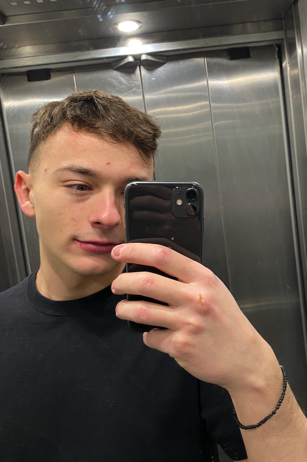

THIS IS MY RESUME
Summary
Hello! My name is Symeon Karpatsis, I am 21 yeaars old and a Greek student of Agriculture at AUTH
(Aristotle University of Thessaloiki). I also started learning Web Development. So, this is my first
capstone project, trying to present my resume. I'm a very active person, I always want to learn new things,
like in this case, I learnt Web Development.

Education
This is my educational process until now...
- High School Diploma
- School of Agriculture in process
- English language Diploma (Proficiency)
Skills
- Familiar with MacOS systems as a user
- Familiar with Office Programms
- A little knowledge of Python
Certifications
I have papers of competition in various seminars with agricultural interest such as:
- Circular Economy and Sustainabilitty
- Recycling and Sustainabilitty
- Agricultural Management and Innovation